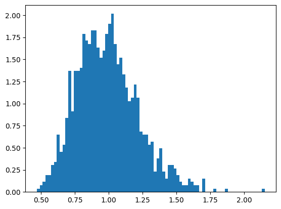
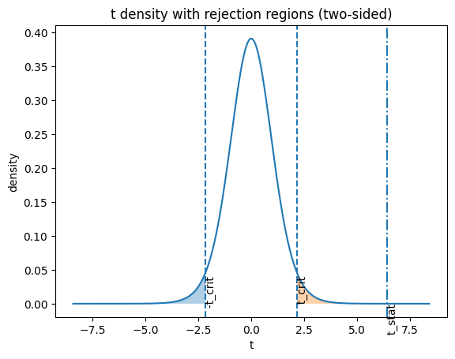

עד עכשיו בנינו שרשרת: יחידה 1 נתנה לנו התפלגויות, יחידה 2 לימדה אותנו לנחש פרמטר מהמדגם — ולדעת שהניחוש \(\bar{X}\) הוא משתנה מקרי עם שונות \(\sigma^2/n\). היחידה הזאת סוגרת את המשולש: איך הופכים אומד + התפלגות להחלטות.
שני סוגי תשובות נלמד לתת: תשובת כן/לא ("האם התרופה עובדת?") — זו בדיקת השערות; ותשובת טווח ("ההשפעה היא בין 0.4 ל-0.8") — זה רווח סמך. ולמה זו היחידה החשובה בקורס? כי כל מה שיבוא אחר כך — עמודת ה-P>|t| בפלט רגרסיה (יחידה 4), מבחן ה-F של ANOVA (יחידה 8) — הוא בדיוק המנגנון שנבנה כאן, בתחפושות שונות.
💡 הרעיון של כל היחידה — במשפט אחד
מניחים שהעולם "משעמם" (אין אפקט, אין הבדל — זו H0), מחשבים כמה התוצאה שקיבלנו מפתיעה תחת ההנחה הזאת, ואם היא מפתיעה מדי — מסיקים שהעולם כנראה לא משעמם.
3.1 משפט הגבול המרכזי — הקסם שמאפשר הכל
לפני שבודקים השערות, צריך לדעת איך \(\bar{X}\) מתפלג. וכאן מגיע המשפט המפורסם ביותר בסטטיסטיקה: ממוצע של מדגם גדול מתפלג בקירוב נורמלית — לא משנה איך נראית האוכלוסייה המקורית!
בשיעור הדגימו את זה יפה. שלב 1: דגמו 100,000 ערכים מהתפלגות מעריכית — התפלגות שנראית הכי רחוק מפעמון שאפשר:
שלב 2: לקחו 1,250 מדגמים בגודל 20 מאותה התפלגות, חישבו לכל מדגם ממוצע, וציירו היסטוגרמה של הממוצעים:

אותם נתונים מעריכיים — אבל היסטוגרמת הממוצעים כבר נראית פעמון סביב 1! למה? כל ממוצע הוא סכום של 20 "רעשים" בלתי תלויים — וכמו שראינו אצל χ² ביחידה 1, סכומים של הרבה רעשים מתעגלים לנורמלית.
💡 למה זה קורה, ולמה זה קריטי
בממוצע, הקפריזות של תצפיות בודדות מתקזזות: תצפית גבוהה במיוחד מתאזנת עם נמוכה. ההתקזזות הזאת "משייפת" את הצורה המקורית לפעמון. וההשלכה ענקית: מותר לנו לבנות מבחנים שמניחים נורמליות של הממוצע גם כשהנתונים עצמם ממש לא נורמליים — בתנאי שהמדגם מספיק גדול. בלי המשפט הזה, כל מה שנעשה בהמשך היה קורס רק על נתונים נורמליים.
3.2 הלוגיקה של בדיקת השערות — משפט בבית דין
מבחן השערות עובד בדיוק כמו משפט פלילי:
בבית המשפט
בסטטיסטיקה
הנאשם חף מפשע עד שהוכח אחרת
\(H_0\) — השערת האפס: "אין אפקט, אין הבדל, הכל מקרי"
טענת התביעה
\(H_1\) — ההשערה האלטרנטיבית: "יש משהו אמיתי"
הראיות
המדגם
"מעבר לספק סביר"
רמת המובהקות \(\alpha\) (בדרך כלל 0.05)
הרשעה
דחיית \(H_0\)
שימו לב לנקודה העדינה: לא מנסים "להוכיח" את \(H_1\) ישירות. מניחים ש-\(H_0\) נכונה, ובודקים אם המדגם מסתדר עם ההנחה. אם הוא לא מסתדר — קיצוני מדי, מפתיע מדי — דוחים את \(H_0\).
📐 p-value — המספר שמכמת "כמה מפתיע"
$$p\text{-value}=P\big(\text{לקבל תוצאה קיצונית כמו שקיבלנו או יותר}\;\big|\;H_0\text{ נכונה}\big)$$
פענוח: הקו האנכי | פירושו "בהינתן ש-" (הסתברות מותנית). כלומר: אם העולם משעמם, מה הסיכוי לראות במקרה תוצאה כמו שלנו? p זעיר (למשל 0.0001) = "כמעט בלתי אפשרי שזה קרה במקרה" ⇐ דוחים את \(H_0\). כלל ההחלטה: אם \(p\le\alpha\) — דוחים.
⚠️ שתי טעויות פירוש קלאסיות
1) p-value הוא לא "ההסתברות ש-\(H_0\) נכונה"! הוא מחושב בהנחה ש-\(H_0\) נכונה — אלה שני דברים שונים לגמרי. 2) "לא דחינו את \(H_0\)" ≠ "\(H_0\) נכונה". כמו זיכוי מחוסר ראיות — אולי פשוט לא היה לנו מדגם מספיק גדול לתפוס את האפקט.
💡 עוד שתי דרכים להגיד p-value 📓 תוכן מקובץ סיכום
1) ההיגיון של הדחייה: כשה-p זעיר, יש רק שתי אפשרויות — או שקרה אירוע נדיר באמת תחת \(H_0\), או ש-\(H_0\) פשוט לא נכונה. מכיוון שהאפשרות הראשונה בלתי סבירה, בוחרים בשנייה ודוחים — בידיעה שיש סיכוי (עד \(\alpha\)) שדווקא האירוע הנדיר הוא שקרה. 2) מהחידון בכיתה: p-value הוא "ה-\(\alpha\) המינימלי לדחייה" — הרמה המחמירה ביותר שבה עדיין היינו דוחים. p=0.03? דוחים ב-\(\alpha=0.05\) אבל לא ב-\(\alpha=0.01\). ניסוח שמתאים בול לשאלות אמריקאיות.
🎯 שאלה שהמרצה נתן בכיתה כדוגמת שאלת מבחן📓 תוכן מקובץ סיכום
האם ההשערות \(H_0\) ו-\(H_1\) שקבענו תלויות בנתונים של המדגם?
💬 עיקרון הקדימות: את ההשערות מנסחים לפני שאוספים או מציצים בנתונים. לנסח השערה אחרי שראית את המדגם זה כמו לירות חץ ואז לצייר סביבו את המטרה — כל תוצאה תיראה "מובהקת". המרצה סימן את זה במפורש כדוגמת שאלת מבחן.
🎯 שאלה 11 מהמבחן לדוגמא
כשאנחנו רוצים לבדוק אם קיימת מובהקות סטטיסטית, אנחנו בעצם:
💬 זו בדיוק הלוגיקה של הסעיף: מניחים H0, מודדים הפתעה, ודוחים אם ההפתעה גדולה מדי. שימו לב שאף פעם לא "מניחים את H1" — כל החישוב חי בעולם של H0. זו בדיוק המלכודת באופציה השנייה.
3.3 מבחן t למדגם אחד — הבדיקה הראשונה שלנו
התרחיש: מערכת שירות אמורה לטפל בלקוח ב-10 דקות בממוצע. דגמנו 25 טיפולים. האם הממוצע האמיתי באמת 10?
📐 ההשערות
$$H_0:\mu=\mu_0 \qquad H_1:\mu\neq\mu_0$$
פענוח: \(\mu\) — התוחלת האמיתית (לא ידועה); \(\mu_0\) — הערך שטוענים עליו (אצלנו 10). ה-\(\neq\) ב-\(H_1\) אומר שזה מבחן דו-צדדי: חשוד גם למעלה וגם למטה.
📐 סטטיסטי המבחן
$$T=\frac{\bar{X}-\mu_0}{S/\sqrt{n}}\;\sim\;t_{n-1}$$
פענוח: המונה \(\bar{X}-\mu_0\) — כמה הממוצע שלנו רחוק ממה ש-\(H_0\) טוענת. המכנה \(S/\sqrt{n}\) — סטיית התקן של \(\bar{X}\) עצמו (זה בדיוק \(\sqrt{\sigma^2/n}\) מיחידה 2, עם \(S\) במקום \(\sigma\) שאיננו יודעים). כלומר: T מודד "בכמה סטיות תקן של הממוצע" המדגם רחוק מהטענה — ממש תקנון מיחידה 1, גרסת אומדים. \(t_{n-1}\) — התפלגות t עם \(n-1\) דרגות חופש.
🔎 בונוס: למה t ולא Z? ולמה שוב n−1?
אם היינו יודעים את \(\sigma\), המונה חלקי \(\sigma/\sqrt{n}\) היה נורמלי סטנדרטי — מבחן Z. אבל אנחנו אומדים את \(\sigma\) עם \(S\), וזה מוסיף אי-ודאות: לפעמים \(S\) יוצא במקרה קטן והיחס מתנפח. לכן ההתפלגות הנכונה היא t — "נורמלית עם רגליים של χ²" מהטבלה של יחידה 1: זנבות שמנים יותר שסופגים את חוסר הוודאות של \(S\). וה-\(n-1\)? אלה דרגות החופש של \(S\) — אותו אילוץ "סכום הסטיות = 0" שכבר פגשנו פעמיים. כש-\(n\) גדל, \(S\) נהיה אמין, וה-t מתכנסת לנורמלית.
✏️ הדוגמה מהשיעור — צעד אחר צעד
נתונים: \(n=25\), \(\mu_0=10\), ממוצע מדגמי \(\bar{X}=11.08\), סטיית תקן מדגמית \(S=1.007\). 1) טעות התקן: \(SE=S/\sqrt{n}=1.007/5\approx 0.2015\). 2) הסטטיסטי: \(t=(11.08-10)/0.2015=5.36\) — המדגם רחוק 5.36 טעויות-תקן מהטענה! 3) הערך הקריטי: \(t_{0.975,\,24}=2.064\). כלל: דוחים אם \(|t|>2.064\). 4) מסקנה: \(5.36 \gg 2.064\), ו-\(p\approx 0.00002\) — דוחים את \(H_0\) בפער עצום. זמן השירות האמיתי כנראה גבוה מ-10 דקות.
⚠️ באג אמיתי מהשיעור — ddof בפייתון
בחישוב הידני בכיתה יצא \(t=5.47\) בעוד ש-SciPy החזירה \(t=5.36\). הסיבה: numpy.std() מחלק כברירת מחדל ב-\(n\) (ddof=0, האומד המוטה מיחידה 2!) במקום ב-\(n-1\). התיקון: x.std(ddof=1). זכור את זה — הבדל בין שני פלטי פייתון הוא לפעמים בסך הכל ddof.
שתי דרכים להחליט — ערך קריטי או p-value

מהשיעור: צפיפות t עם אזורי הדחייה מוצללים בשני הזנבות. הקווים המקווקווים = הערכים הקריטיים ±t_crit, וכל זנב מכיל שטח של α/2 (ביחד: α=0.05). קו הקו-נקודה מימין = הסטטיסטי שקיבלנו (t=6.41 בדוגמת שני המדגמים) — עמוק בזנב הדחייה. למה שני זנבות? כי המבחן דו-צדדי: תוצאה קיצונית לכל כיוון מפלילה את H0.
שתי הדרכים תמיד מסכימות: \(|t|\ge t_{crit}\) ⟺ \(p\le\alpha\). הערך הקריטי שואל "האם עברת את הגבול?", ה-p-value אומר "בכמה עברת אותו".
3.4 שני מדגמים — האם שתי קבוצות שונות באמת?
השאלה הנפוצה במחקר אמיתי: קבוצת טיפול מול קבוצת ביקורת, מכונה A מול מכונה B. ההשערות:
📐 השערות לשני מדגמים
$$H_0:\mu_1-\mu_2=0 \qquad H_1:\mu_1-\mu_2\neq 0$$
פענוח: \(\mu_1,\mu_2\) — התוחלות האמיתיות של שתי האוכלוסיות. \(H_0\) אומרת: ההפרש ביניהן אפס (אין הבדל אמיתי — כל הבדל שנראה במדגם הוא רעש).
מבחן Welch — הגרסה שנלמדה בשיעור
📐 סטטיסטי Welch
$$t=\frac{\bar{x}_1-\bar{x}_2}{SE} \qquad SE=\sqrt{\frac{s_1^2}{n_1}+\frac{s_2^2}{n_2}}$$
פענוח: המונה — ההפרש הנצפה בין ממוצעי המדגמים. במכנה: \(s_1^2/n_1\) היא השונות של \(\bar{x}_1\) (שוב \(\sigma^2/n\) מיחידה 2!) ו-\(s_2^2/n_2\) של \(\bar{x}_2\); כשמחסרים שני דברים בלתי תלויים השונויות מתחברות — לכן מחברים ולוקחים שורש. התוצאה: "כמה טעויות-תקן של ההפרש רחוק ההפרש שקיבלנו מאפס".
היתרון הגדול של Welch: הוא לא מניח שלשתי הקבוצות אותה שונות — ולכן בטוח לשימוש כמעט תמיד. המחיר: דרגות החופש שלו מחושבות בנוסחה מסובכת (Welch–Satterthwaite) ויוצאות מספר "שבור":
✏️ הדוגמה מהשיעור — צעד אחר צעד
קבוצה 1: 8 תצפיות, ממוצע 5.10, שונות \(s_1^2=0.04\). קבוצה 2: 7 תצפיות, ממוצע 4.471, שונות \(s_2^2=0.0324\). 1) ההפרש: \(5.10-4.471=0.629\). 2) \(SE=\sqrt{0.04/8+0.0324/7}=0.0981\). 3) \(t=0.629/0.0981=6.41\), עם \(df=12.98\) (כן, לא שלם — זה בסדר גמור!). 4) \(t_{crit}=2.161\), ו-\(p=0.000023\) ⇐ דוחים: הקבוצות שונות באמת. זה בדיוק ה-t=6.41 שמצויר עמוק באזור הדחייה בגרף למעלה.
שונות מאוחדת (Spooled) — ההשלמה שחשובה למבחן
יש גם גרסה קלאסית יותר של מבחן שני מדגמים (מבחן t של סטודנט), שכן מניחה ששתי הקבוצות חולקות אותה שונות. במקרה כזה הגיוני לאחד את שני אומדי השונות לאומד אחד משופר:
📐 השונות המאוחדת
$$S_p^2=\frac{(n_1-1)S_1^2+(n_2-1)S_2^2}{n_1+n_2-2}$$
פענוח: זה ממוצע משוקלל של שתי השונויות, כשהמשקולות הן דרגות החופש \(n_1-1\) ו-\(n_2-1\) — קבוצה גדולה יותר (יותר מידע) מקבלת יותר משקל. המכנה \(n_1+n_2-2\) הוא סך דרגות החופש: איבדנו אחת על כל ממוצע קבוצה (הסיפור מיחידה 1, פעמיים). ו-\(S_p\) — סטיית התקן המאוחדת — הוא השורש.
⚠️ ממוצע משוקלל של השונויות — לא של סטיות התקן!
המיצוע נעשה על השונויות (\(S^2\), בריבוע), ורק בסוף לוקחים שורש. וגם: זה ממוצע משוקלל — לא סתם \((S_1^2+S_2^2)/2\), אלא לפי דרגות החופש. שני הדיוקים האלה הם בדיוק מה שהמבחן בודק.
🎯 שאלה 6 מהמבחן לדוגמא
מהו \(S_{pooled}\)?
💬 בדיוק כמו בנוסחה: \(S_p^2\) ממצע את \(S_1^2\) ו-\(S_2^2\) עם משקולות לפי דרגות החופש. "ממוצע של הממוצעים" מתבלבל עם משהו אחר לגמרי (ממוצעי הקבוצות), וסכומים — פשוט לא ממוצע. שים לב: מבחן t עם שונות מאוחדת לא נלמד בהרצאות (שם למדו Welch), אבל הנוסחה של \(S_p\) עצמה כן הופיעה — בהקשר של Cohen's d (סעיף 3.7). במבחן היא שאלה בפני עצמה.
3.5 רווח סמך — במקום כן/לא, טווח
מבחן השערות עונה "כן/לא". רווח סמך עונה על שאלה עשירה יותר: איפה סביר שהאמת נמצאת?
📐 רווח סמך לתוחלת (רמת סמך 95%)
$$\bar{X}\;\pm\; t_{1-\alpha/2,\,n-1}\cdot\frac{S}{\sqrt{n}}$$
פענוח: מתחילים מהאומד \(\bar{X}\) (המרכז), ופורשים לשני הצדדים "מרווח ביטחון": הערך הקריטי של t כפול טעות התקן של הממוצע. אותם שלושה שחקנים מהמבחן — אומד, ערך קריטי, טעות תקן — מורכבים אחרת.
✏️ מהדוגמה של Welch
ההפרש בין הקבוצות: 0.629. רווח סמך 95%: \(0.629\pm 2.161\times 0.0981 = [0.417,\; 0.841]\).
שים לב: כל הרווח מעל האפס — בעקביות מושלמת עם זה שדחינו את \(H_0:\mu_1-\mu_2=0\). רווח סמך שלא מכיל את ערך ה-\(H_0\) ⟺ המבחן דוחה. שני צדדים של אותו מטבע.
⚠️ מהחידון בכיתה: עוד נתונים = רווח צר יותר? לא בהכרח! 📓 תוכן מקובץ סיכום
"ככל שיש יותר נתונים, רווח הסמך בהכרח יקטן" — טענה שגויה שהופיעה בחידון. ברוחב הרווח יושבים שניים: \(n\) (במכנה — מכווץ) אבל גם \(S\) (במונה). אם התצפיות החדשות הן ערכי קצה, \(S\) יכול לגדול ולהרחיב את הרווח למרות שהמדגם גדל. בדרך כלל עוד נתונים מצרים את הרווח — אבל המילה "בהכרח" היא שמפילה בשאלות אמריקאיות.
מה רווח סמך באמת אומר — הסעיף הכי חשוב במבחן
זה המקום שבו כמעט כולם נופלים, ויש עליו שתי שאלות במבחן. בוא נעשה סדר עם העיקרון מיחידה 2:
💡 מי קבוע ומי אקראי?
הפרמטר \(\mu\) הוא מספר קבוע — הוא יושב במקומו ולא זז (פשוט לא מכירים אותו). מה שאקראי זה הרווח: הוא בנוי מ-\(\bar{X}\) ומ-\(S\) שמשתנים ממדגם למדגם. אז הפירוש הנכון: אם נחזור על הניסוי שוב ושוב, 95% מהרווחים שנבנה יכילו את \(\mu\). הרווח הוא רשת דיג שזזה בין מדגמים — הדג קבוע, הרשת אקראית, ו-95% מההטלות תופסות אותו.
⚠️ הניסוח שנשמע נכון אבל שגוי
"יש הסתברות 95% שהפרמטר בתוך הרווח" — שגוי! לפרמטר אין הסתברויות, הוא לא משתנה מקרי. אחרי שחישבנו רווח ספציפי, הפרמטר או בפנים או בחוץ — אנחנו פשוט לא יודעים. ה-95% מתאר את השיטה (כמה פעמים היא מצליחה לאורך זמן), לא את הרווח הבודד.
🎯 שאלה 7 מהמבחן לדוגמא
מהו רווח סמך ברמת 95%?
💬 הפירוש התדירותי הנכון: השיטה מצליחה ב-95% מהמדגמים. האופציה הראשונה היא בדיוק הניסוח המפתה-אך-שגוי מהאזהרה — הפרמטר קבוע ואין לו "הסתברות להיות" איפשהו.
🎯 שאלה 8 מהמבחן לדוגמא
איזו טענה שגויה?
💬 שלוש הטענות האחרות נכונות: הרווח מחושב מהמדגם, רוחבו תלוי ב-\(n\) (דרך \(S/\sqrt{n}\) — מדגם גדול = רווח צר), והוא אקראי שמשתנה בין מדגמים. השגויה היא בדיוק ההיפוך של העיקרון: הפרמטר קבוע, הרווח אקראי — לא להפך!
3.6 שגיאות סוג I ו-II, ועוצמת המבחן
כל החלטה תחת אי-ודאות יכולה להשתבש בשתי דרכים — נחזור לבית המשפט:
\(H_0\) נכונה (חף מפשע)
\(H_0\) שגויה (אשם)
דחינו את \(H_0\) (הרשענו)
שגיאה מסוג I — "אזעקת שווא" הסתברות: \(\alpha\)
החלטה נכונה ✓ הסתברות: העוצמה \(1-\beta\)
לא דחינו (זיכינו)
החלטה נכונה ✓
שגיאה מסוג II — "פספוס" הסתברות: \(\beta\)
📐 ההגדרות הפורמליות
$$\alpha=P(\text{דחיית } H_0 \mid H_0 \text{ נכונה}) \qquad \beta=P(\text{אי-דחייה} \mid H_1 \text{ נכונה}) \qquad \text{Power}=1-\beta$$
פענוח: \(\alpha\) — הסיכוי להרשיע חף מפשע (אנחנו קובעים אותו מראש — לרוב 5%); \(\beta\) — הסיכוי לפספס אפקט אמיתי; והעוצמה \(1-\beta\) — הסיכוי לתפוס אפקט אמיתי כשהוא קיים. מבחן חזק = רשת צפופה.
💡 איך טעות סוג I בכלל קורית? 📓 תוכן מקובץ סיכום
שים לב: כשטועים טעות סוג I, שום דבר לא "השתנה בעולם" — \(H_0\) באמת נכונה! פשוט במקרה יצא לנו מדגם לא מייצג שנפל באזור הדחייה. זה בדיוק מה ש-\(\alpha=5\%\) אומר: אחד מ-20 מדגמים ייפול שם סתם במזל. והשרשרת הסיבתית שכדאי לזכור: \(\alpha\) קובעת את מיקום אזור הדחייה ⇐ מיקום אזור הדחייה קובע את \(\beta\) — לכן אי אפשר להזיז אחת בלי להזיז את השנייה.
💡 למה אי אפשר לנצח בשתי החזיתות
רוצה פחות הרשעות שווא? דרוש ראיות חזקות יותר (הקטן את \(\alpha\)) — אבל אז תשחרר יותר אשמים (\(\beta\) גדל). זו נדנדה: בהינתן מדגם קבוע, שיפור באחת מרעה את השנייה. הדרך היחידה לשפר את שתיהן ביחד: עוד ראיות — כלומר מדגם גדול יותר. מה מגדיל עוצמה? מדגם גדול יותר, אפקט אמיתי גדול יותר (קל יותר לתפוס פיל מעכבר), פיזור קטן יותר, ו-\(\alpha\) גדול יותר (במחיר אזעקות שווא).
בדוק את עצמך
חוקר הקטין את רמת המובהקות מ-0.05 ל-0.01 (בלי לשנות כלום אחר). מה קרה לשגיאות?
💬 הנדנדה בפעולה: דרישת ראיות מחמירה יותר (α קטן) אומרת שקשה יותר לדחות H0 — גם כשהיא באמת שגויה. לכן מפספסים יותר אפקטים אמיתיים: β גדל, העוצמה יורדת. לשיפור בשתי החזיתות אין קיצור דרך — צריך מדגם גדול יותר.
3.7 גודל אפקט (Cohen's d) — מובהק זה עוד לא גדול
הנה בעיה אמיתית: עם מדגם של מיליון איש, גם הבדל של גרם אחד במשקל בין שתי קבוצות ייצא "מובהק" (p זעיר). מובהקות אומרת "ההבדל כנראה לא מקרי" — היא לא אומרת "ההבדל חשוב". בשביל זה יש מדד נפרד:
📐 גודל האפקט של כהן
$$d=\frac{\bar{X}_1-\bar{X}_2}{S_p}$$
פענוח: ההפרש בין הממוצעים, מחולק בסטיית התקן המאוחדת \(S_p\) (מסעיף 3.4!). כלומר: ההבדל ביחידות של סטיות תקן — שוב רעיון התקנון מיחידה 1. d=0.5 פירושו: הקבוצות רחוקות חצי סטיית תקן. סרגל הפירוש: 0.2 קטן · 0.5 בינוני · 0.8 גדול.
✏️ על הדוגמה שלנו
בדוגמת שני המדגמים: \(S_p^2=\frac{7(0.04)+6(0.0324)}{13}=0.0365\), כלומר \(S_p=0.191\), ולכן \(d=0.629/0.191\approx 3.3\) — אפקט עצום (פי 4 מהסף של "גדול"). כאן גם המבחן מובהק וגם האפקט ענק — אבל זכור שהם לא חייבים לבוא ביחד.
🎯 חדשות טובות לבחינה
סרגל הפירוש של Cohen's d (0.2/0.5/0.8) — וגם של המדדים שנפגוש ב-ANOVA (η², ω²) — נמצא בתוך דף העזר שתקבל בבחינה, בטבלת גדלי האפקט. את הנוסחה של \(S_p\) לעומת זאת אין שם — לזכור!
בדוק את עצמך
ניסוי עם 2 מיליון משתתפים מצא הבדל עם p=0.0001 אבל d=0.03. מה המסקנה הנכונה?
💬 המדגם הענק נתן עוצמה אדירה — המבחן תפס אפקט אמיתי-אך-מיקרוסקופי (d=0.03, הרחק מתחת לסף של אפקט "קטן", 0.2). p עונה "האם יש משהו?", d עונה "כמה זה משהו?". תמיד לדווח את שניהם.
3.8 סיכום היחידה + מה חשוב לבחינה
מושג
שורה תחתונה
משפט הגבול המרכזי
ממוצעים של מדגמים גדולים ~ נורמלית, לא משנה מה האוכלוסייה
סוג I = אזעקת שווא (α); סוג II = פספוס (β); עוצמה = 1−β
Cohen's d
הפרש בסטיות תקן; 0.2/0.5/0.8; מובהקות ≠ גודל
🎯 מוקדי בחינה ביחידה הזאת — 4 שאלות!
שאלה 6: \(S_{pooled}\) = ממוצע משוקלל של השונויות. שאלות 7–8: פירוש רווח סמך — "ב-95% מהמדגמים הרווח יכיל את הפרמטר"; הפרמטר קבוע (לא אקראי!), הרווח אקראי. שאלה 11: מובהקות = תחת H0 קיבלנו תוצאה לא סבירה. לא בדף העזר: נוסחאות t, SE, \(S_p\) ורווח סמך — לזכור בעל-פה. כן בדף העזר: סרגל גדלי האפקט.
שאלון סיכום
חישבנו רווח סמך 95% להפרש בין שתי תרופות: \([-0.2,\; 1.4]\). מה יגיד מבחן ההשערות המקביל (α=0.05)?
💬 הכלל מסעיף 3.5: רווח סמך שמכיל את ערך ה-H0 (כאן 0) ⟺ המבחן לא דוחה. "אולי אין הבדל בכלל" עדיין על השולחן. רווח סמך ומבחן הם שני צדדים של אותו מטבע — תמיד מסכימים.